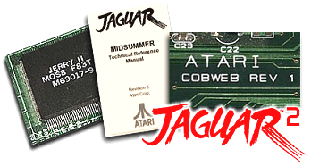
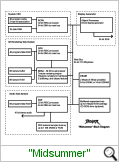

|

Jaguar
2 was Atari's next video-game console. In development from 1992
to the end of 1995, the Jaguar 2 was codenamed "Midsummer", and as the
Atari Technical Reference Manual (TRM) explains:
|
“More strange than true. I
never may believe
These antique fables, nor these fairy toys.”
Act V. Scene 1. |
"Midsummer is based around a pair of custom
chips, called Oberon and Puck, which are primarily intended to be the
heart of a mega high-performance computer for games and leisure. Oberon
and Puck replace Tom and Jerry from the original Jaguar system.
Oberon is the King of the fairies and Puck is Robin Goodfellow, his
side-kick, from “A Midsummer Night’s Dream” by William Shakespeare."
According to the TRM "Midsummer is an
evolutionary development of Jaguar to give significant performance gains
for 3D games. It offers greatly improved performance for a small
increase in system cost. It is intended to be software compatible with
Jaguar and so will run the existing library of games. The following
areas of the system have substantially improved performance:
· polygon rendering speed
· texture mapped polygons
· computational ability
· audio synthesis
Midsummer is intended to be easy to program in a high-level language. It
has an additional RISC processor, the RCPU, with an instruction cache to
improve the performance of C programs."
Though
a final design was never reached, initial prototypes were assembled and
Beta development boards known as Cobweb were being shipped to developers
from August 1995,
yielding the following information... (The Cobweb board is a prototype
development board for Midsummer which has the Oberon b-test ASIC from
Midsummer and the Jerry ASIC from Jaguar One. This system is intended to
allow some software development to start before the availability of
Puck. The Oberon b-test ASIC is not the final production version of
Oberon, and is both slower and buggier then the production silicon.)

Block diagram note: This diagram summarises
the system architecture of Midsummer. It does not show the peripheral
connections, or the 68000, which is still present only for compatibility
reasons and to boot the system on this bus. The RCPU, GPU and DSP are
all based on the same Jaguar RISC architecture. All three processors are
32-bit RISC, executing close to one instruction per clock cycle. They
are tuned for graphics and audio
processing; and offer single cycle multiply operations as well as normal
RISC functions.
The RCPU is new for Midsummer, and has been
specifically tuned for running C code. It is intended to act as the CPU
of the system, and is the geometry engine for 3D graphics.
|